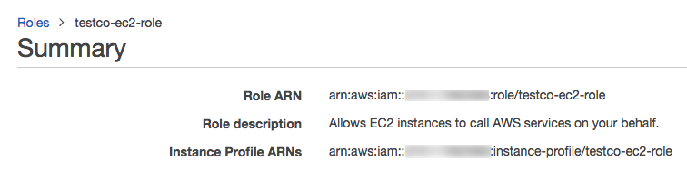

Tutorial: Configure S3 access with an instance profile
This tutorial walks you through how to create an instance profile with read, write, update, and delete permissions on a single S3 bucket. You can grant privileges for multiple buckets using a single IAM role and instance profile. It is also possible to use instance profiles to grant only read and list permissions on S3.
Administrators configure IAM roles in AWS, link them to a Databricks workspace, and grant access to privileged users to associate instance profiles with compute. All users that have access to compute resources with an instance profile attached to it gain the privileges granted by the instance profile.
Note
Databricks recommends using Unity Catalog volumes or external locations to connect to S3 instead of instance profiles. Unity Catalog simplifies security and governance of your data by providing a central place to administer and audit data access across multiple workspaces in your account. See Connect to cloud object storage using Unity Catalog.
Before you begin
This tutorial is designed for workspace administrators. You must have sufficient privileges in the AWS account containing your Databricks workspace, and be a Databricks workspace administrator.
This tutorial assumes the following existing permissions and assets:
Privileges to edit the IAM role used to deploy the Databricks workspace.
Privileges to create new IAM roles in AWS.
Privileges to edit permissions on an S3 bucket.
Step 1: Create an instance profile using the AWS console
In the AWS console, go to the IAM service.
Click the Roles tab in the sidebar.
Click Create role.
Under Trusted entity type, select AWS service.
Under Use case, select EC2.
Click Next.
At the bottom of the page, click Next.
In the Role name field, type a role name.
Click Create role.
In the role list, click the role.
Add an inline policy to the role. This policy grants access to the S3 bucket.
In the Permissions tab, click Add permissions > Create inline policy.
Click the JSON tab.
Copy this policy and set
<s3-bucket-name>to the name of your bucket.{ "Version": "2012-10-17", "Statement": [ { "Effect": "Allow", "Action": [ "s3:ListBucket" ], "Resource": [ "arn:aws:s3:::<s3-bucket-name>" ] }, { "Effect": "Allow", "Action": [ "s3:PutObject", "s3:GetObject", "s3:DeleteObject", "s3:PutObjectAcl" ], "Resource": [ "arn:aws:s3:::<s3-bucket-name>/*" ] } ] }
Click Review policy.
In the Name field, type a policy name.
Click Create policy.
In the role summary, copy the Role ARN.

Note
If you intend to enable encryption for the S3 bucket, you must add the IAM role as a Key User for the KMS key provided in the configuration. See Configure encryption for S3 with KMS.
Step 2: Enable the policy to work with serverless resources
This step ensures that your instance profile also works for configuring SQL warehouses with instance profiles. See Enable data access configuration.
In the role list, click your instance profile.
Select the Trust Relationships tab.
Click Edit Trust Policy.
Within the existing
Statementarray, append the following JSON block to the end of the existing trust policy. Ensure that you don’t overwrite the existing policy.{ "Effect": "Allow", "Principal": { "AWS": [ "arn:aws:iam::790110701330:role/serverless-customer-resource-role" ] }, "Action": "sts:AssumeRole", "Condition": { "StringEquals": { "sts:ExternalId": [ "databricks-serverless-<YOUR-WORKSPACE-ID1>", "databricks-serverless-<YOUR-WORKSPACE-ID2>" ] } } }
The only thing you need to change in the statement is the workspace IDs. Replace the
YOUR_WORKSPACE-IDs with one or more Databricks workspace IDs for the workspaces that will use this role.Note
To get your workspace ID, check the URL when you’re using your workspace. For example, in
https://<databricks-instance>/?o=6280049833385130, the number aftero=is the workspace ID.Do not edit the principal of the policy. The
Principal.AWSfield must continue to have the valuearn:aws:iam::790110701330:role/serverless-customer-resource-role. This references a serverless compute role managed by Databricks.Click Review policy.
Click Save changes.
Step 3: Create the bucket policy
At a minimum, the S3 policy must include the ListBucket and GetObject actions, which provide read-only access to a bucket. Delta Lake uses DeleteObject and PutObject permissions during regular operations. The permissions in the example policy below are the recommended defaults for clusters that read and write data.
Note
S3 buckets have universally unique names and do not require an account ID for universal identification. If you choose to link an S3 bucket to an IAM role and Databricks workspace in a different AWS account, you must specify the account ID when configuring your S3 bucket policy.
Go to your S3 console. From the Buckets list, select the bucket for which you want to create a policy.
Click Permissions.
Under Bucket policy, click Edit.
Paste in a policy. A sample cross-account bucket IAM policy could be the following, replacing
<aws-account-id-databricks>with the AWS account ID where the Databricks environment is deployed,<iam-role-for-s3-access>with the instance profile role, and<s3-bucket-name>with the bucket name.{ "Version": "2012-10-17", "Statement": [ { "Sid": "Example permissions", "Effect": "Allow", "Principal": { "AWS": "arn:aws:iam::<aws-account-id-databricks>:role/<iam-role-for-s3-access>" }, "Action": [ "s3:GetBucketLocation", "s3:ListBucket" ], "Resource": "arn:aws:s3:::<s3-bucket-name>" }, { "Effect": "Allow", "Principal": { "AWS": "arn:aws:iam::<aws-account-id-databricks>:role/<iam-role-for-s3-access>" }, "Action": [ "s3:PutObject", "s3:GetObject", "s3:DeleteObject", "s3:PutObjectAcl" ], "Resource": "arn:aws:s3:::<s3-bucket-name>/*" } ] }
Click Save.
Step 4: Locate the IAM role that created the Databricks deployment
If you don’t know which IAM role created the Databricks deployment, do the following:
As an account admin, log in to the account console.
Go to Workspaces and click your workspace name.
In the Credentials box, note the role name at the end of the Role ARN.
For example, in the Role ARN arn:aws:iam::123456789123:role/finance-prod, the role name is finance-prod.
Step 5: Add the S3 IAM role to the EC2 policy
In the AWS console, go to the IAM service.
Click the Roles tab in the sidebar.
Click the role that created the Databricks deployment.
On the Permissions tab, click the policy.
Click Edit Policy.
Append the following block to the end of the
Statementarray. Ensure that you don’t overwrite any of the existing policy. Replace<iam-role-for-s3-access>with the role you created in Tutorial: Configure S3 access with an instance profile:{ "Effect": "Allow", "Action": "iam:PassRole", "Resource": "arn:aws:iam::<aws-account-id-databricks>:role/<iam-role-for-s3-access>" }
Click Review policy.
Click Save changes.
Step 6: Add the instance profile to Databricks
As a workspace admin, go to the admin settings page.
Click the Security tab.
Click Manage next to Instance profiles.
Click Add Instance Profile.
Paste your instance profile ARN into the Instance profile ARN field. If you don’t have the ARN, see Tutorial: Configure S3 access with an instance profile.
For serverless SQL to work with your instance profile, you might need to explicitly specify the role ARN associated with your instance profile in the IAM role ARN field.
This is only a required step if your instance profile’s associated role name (the text after the last slash in the role ARN) and the instance profile name (the text after the last slash in the instance profile ARN) do not match. To confirm whether this applies to you:
In the AWS console, go to the IAM service’s Roles tab. It lists the IAM roles in your account.
Click the role with the name that matches the instance profile name in the Databricks SQL admin settings in the Data Security section for the Instance Profile field that you found earlier in this section.
In the summary area, find the Role ARN and Instance Profile ARNs fields and see if they match.

If they do not match, paste the role ARN into the IAM role ARN field. If the names match, you do not need to set the IAM role ARN field.
Only if you are setting up IAM credential passthrough, select the Meta Instance Profile property.
Databricks validates that the instance profile ARN is both syntactically and semantically correct. To validate semantic correctness, Databricks does a dry run by launching a cluster with this instance profile. Any failure in this dry run produces a validation error in the UI. Validation of the instance profile can fail if the instance profile contains the
tag-enforcementpolicy, preventing you from adding a legitimate instance profile. If the validation fails and you still want to add the instance profile, select the Skip Validation checkbox.Click Add.
Manage instance profiles
Workspace admins can manage manage access to instance profiles and update them. See Manage instance profiles in Databricks.